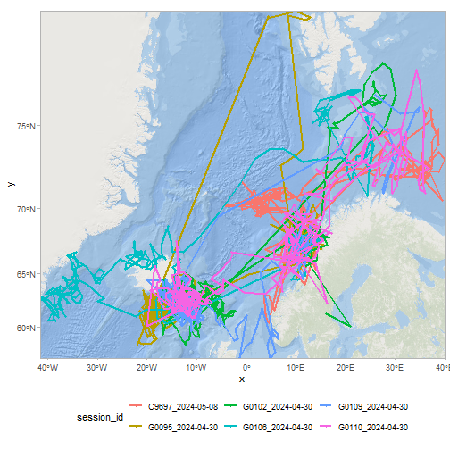
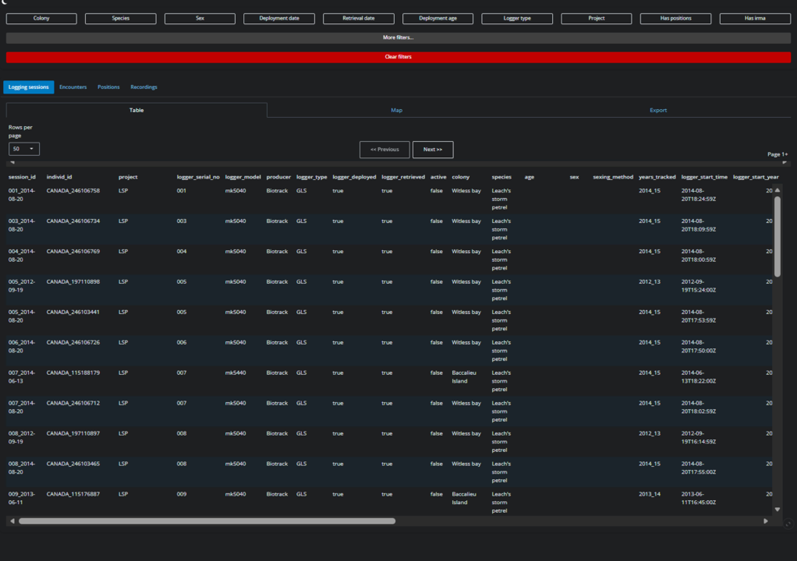

Getting started with seatrackR
Installing, connecting and functions
Julian Evans
2026-10-06
2_getting_started.RmdThis article will show you how to use the seatrackR data package to connect to the SEATRACK database and use some basic functions to fetch data.
Installing seatrackR
seatrackR must be installed from github. We reccomend using the
pak package for this.
pak::pkg_install("NINAnor/seatrackR")You can also use the older devtools::install_github function:
devtools::install_github("NINAnor/seatrackR")Once installed, you can load the package with
Connecting to the SEATRACK database.
You can connect to the SEATRACK database using the
connectSeatrack() function.
The first time you need to connect, you’ll need to enter your credentials. This should be done in the R console not an R script. This is to prevent credentials being leaked.
You can either write your username and credentials as arguments in the function:
connectSeatrack("my_username", "my_password")Or you can call the function bare, with no arguments, which will then give you an interactive prompt in the console:
If this produces no errors, you are succesfully connected to the database.
Credential management
By default, using this function will store your credentials in your project/working directory .renviron file. This means you will not need to type in your credentials next time you connect within that project/working directory. Any scripts run in this project can simply call the function.
If you start a new project or working directory, you will need to register your credentials again.
If you have input your credentials wrongly, you can update the stored
credentials by calling connectSeatrack() with
arguments:
connectSeatrack("my_username", "my_password")or you can use the underlying function for saving credentials,
set_credentials_renviron():
set_credentials_renviron() # With no arguments, will prompt interactively.
# OR
set_credentials_renviron("my_username", "my_password")Changing your password
If this is your first time connecting, you will have been assigned a
temporary password by the administrator. You can change this using
changeSeatrackPassword(). Again, this should never
be stored in a script. Run it only in the console. By default,
this function will automatically update your stored credentials for this
project.
changeSeatrackPassword() # With no arguments, will prompt interactively.
# OR
changeSeatrackPassword("my_super_secure_new_password")## [1] "Wrote credentials to .Renviron"## [1] "Password succesfully changed, you have been reconnected."Your stored credentials will then be updated allowing you to connect using:
Some key functions
Having connected to the database, you can now use the package functions to download some data.
Explore metadata
Colonies/locations
We can view all available SEATRACK colonies using
all_colonies <- getColonies()
head(all_colonies)## id lat lon colony_int_name colony_nat_name lme_id
## 1 a0755af6-5eae-11ee-a646-005056b165f3 53.41200 6.51600 Groningen Groningen NA
## 2 b7c23d4e-0bf0-11e8-82b0-005056b165f3 64.22476 -21.86463 Faxaflói Faxaflói 51
## 3 a38de81c-5ea8-11ee-a646-005056b165f3 55.20000 15.00000 Bornholm Bornholm 1
## 4 43e4779a-5eb3-11ee-a646-005056b165f3 54.54000 -8.39000 Donegal Bay Donegal Bay 6
## 5 b806e594-8645-11ef-847f-005056b165f3 48.74972 -69.03519 Île Laval Île Laval 5
## 6 518444e2-296a-11f0-9d0f-005056b165f3 76.66500 25.34500 Hopen Hopen 54
## country safe_name
## 1 <NA> groningen
## 2 <NA> faxafli
## 3 <NA> bornholm
## 4 <NA> donegal_bay
## 5 <NA> le_laval
## 6 <NA> hopenWe can also get all locations, which can be finer scale areas within/attached to SEATRACK colonies.
all_locations <- getColonies(allLocations = TRUE)
head(all_locations)## id location_name colony_int_name lat lon
## 1 518f8f7a-9f17-11e9-8410-005056b165f3 Kippaku Kippaku 73.717 -56.633
## 2 6a233492-9f17-11e9-8410-005056b165f3 Little Saltee Little Saltee 52.133 -6.617
## 3 6a23bbba-9f17-11e9-8410-005056b165f3 Rathlin Rathlin 55.298 -6.280
## 4 75a4c6e0-9f18-11e9-8410-005056b165f3 Sermilinnguaq Sermilinnguaq 65.417 -52.900
## 5 e5ccedf4-9f17-11e9-8410-005056b165f3 Rockabill Rockabill 53.601 -6.003
## 6 e5cdfbc2-9f17-11e9-8410-005056b165f3 Treshnish Isles Treshnish Isles 56.500 -6.400NOTE: Currently, the vast majority of locations are still 1 to 1 with colonies. This will be developed futher in future.
Note that while all tables actually connect to the
locations table, there is currently some inconsistency in
the language used for compatability reasons. This means tables have
colony columns that actually link to the
location_name column in the locations table.
This will also be fixed in future.
If in doubt, check the locations for a colony.
selected_locations <- all_locations$location_name[all_locations$colony_int_name == "Røst"]Species/Subspecies
We can view all available species within the database:
all_species <- getSpecies()
head(all_species)## id species_name_eng species_name_latin
## 1 b7a445c8-0bf0-11e8-82b0-005056b165f3 Common guillemot Uria aalge
## 2 b7a52f06-0bf0-11e8-82b0-005056b165f3 Brünnich's guillemot Uria lomvia
## 3 b7a63ec8-0bf0-11e8-82b0-005056b165f3 Little auk Alle alle
## 4 b7a7545c-0bf0-11e8-82b0-005056b165f3 Atlantic puffin Fratercula arctica
## 5 b7a84b64-0bf0-11e8-82b0-005056b165f3 Black-legged kittiwake Rissa tridactyla
## 6 b7a94e92-0bf0-11e8-82b0-005056b165f3 Northern fulmar Fulmarus glacialis
## species_name_eng_abrv species_name_latin_abrv seatrack_species
## 1 COGU URAAL TRUE
## 2 BRGU URLOM TRUE
## 3 LIAU ALALL TRUE
## 4 ATPU FRARC TRUE
## 5 BLKW RITRI TRUE
## 6 NOFU FUGLA TRUENote that not all of these are official SEATRACK species (e.g. Black guillemot is in the database, but not an official species). You can filter to just the SEATRACK species:
SEATRACK_species <- all_species[all_species$seatrack_species, ]
head(SEATRACK_species)## id species_name_eng species_name_latin
## 1 b7a445c8-0bf0-11e8-82b0-005056b165f3 Common guillemot Uria aalge
## 2 b7a52f06-0bf0-11e8-82b0-005056b165f3 Brünnich's guillemot Uria lomvia
## 3 b7a63ec8-0bf0-11e8-82b0-005056b165f3 Little auk Alle alle
## 4 b7a7545c-0bf0-11e8-82b0-005056b165f3 Atlantic puffin Fratercula arctica
## 5 b7a84b64-0bf0-11e8-82b0-005056b165f3 Black-legged kittiwake Rissa tridactyla
## 6 b7a94e92-0bf0-11e8-82b0-005056b165f3 Northern fulmar Fulmarus glacialis
## species_name_eng_abrv species_name_latin_abrv seatrack_species
## 1 COGU URAAL TRUE
## 2 BRGU URLOM TRUE
## 3 LIAU ALALL TRUE
## 4 ATPU FRARC TRUE
## 5 BLKW RITRI TRUE
## 6 NOFU FUGLA TRUEYou can also view all subspecies
all_subspecies <- getSpecies(include_subspecies = TRUE)
head(all_subspecies)## id species_name_eng species_name_latin
## 1 b7a445c8-0bf0-11e8-82b0-005056b165f3 Common guillemot Uria aalge
## 2 b7a52f06-0bf0-11e8-82b0-005056b165f3 Brünnich's guillemot Uria lomvia
## 3 b7a63ec8-0bf0-11e8-82b0-005056b165f3 Little auk Alle alle
## 4 b7a63ec8-0bf0-11e8-82b0-005056b165f3 Little auk Alle alle
## 5 b7a7545c-0bf0-11e8-82b0-005056b165f3 Atlantic puffin Fratercula arctica
## 6 b7a84b64-0bf0-11e8-82b0-005056b165f3 Black-legged kittiwake Rissa tridactyla
## species_name_eng_abrv species_name_latin_abrv seatrack_species sub_species
## 1 COGU URAAL TRUE <NA>
## 2 BRGU URLOM TRUE <NA>
## 3 LIAU ALALL TRUE Alle alle alle
## 4 LIAU ALALL TRUE Alle alle polaris
## 5 ATPU FRARC TRUE <NA>
## 6 BLKW RITRI TRUE <NA>getSessionInfo
The function with the most comprehensive metadata filtering available
is getSessionInfo(). This function combines a number of the
database tables to create a human readable information about each
logging session, with one row per session.
it is highly reccomended to call this with some filtering applied, as otherwise the table returned will be extremely large and take a long time to return.
In this example, we filter by year of deployment, colony, species, logger type and whether a logging session has positions in the database.
filtered_sessions <- getSessionInfo(
deployment_year = 2024,
colony = "Røst",
species = "Atlantic puffin",
logger_type = "GLS",
has_positions = TRUE
)
print(nrow(filtered_sessions)) # How much data was returned?## [1] 6
head(filtered_sessions) # Show the first rows## # A tibble: 6 × 33
## session_id individ_id project logger_serial_no logger_model producer logger_type logger_deployed
## <chr> <chr> <chr> <chr> <chr> <chr> <pq_lggr_> <lgl>
## 1 G0106_2024-… NOO_MA204… SEATRA… G0106 mk4083 Lotek GLS TRUE
## 2 G0109_2024-… NOS_51205… SEATRA… G0109 mk4083 Lotek GLS TRUE
## 3 C9697_2024-… NOO_MA284… SEATRA… C9697 mk4083 Lotek GLS TRUE
## 4 G0102_2024-… NOO_MA284… SEATRA… G0102 mk4083 Lotek GLS TRUE
## 5 G0095_2024-… NOS_51208… SEATRA… G0095 mk4083 Lotek GLS TRUE
## 6 G0110_2024-… NOS_51205… SEATRA… G0110 mk4083 Lotek GLS TRUE
## # ℹ 25 more variables: logger_retrieved <lgl>, active <lgl>, colony <chr>, species <chr>,
## # age <chr>, sex <chr>, sexing_method <chr>, years_tracked <chr>, logger_start_time <dttm>,
## # logger_start_year <int>, logging_mode <chr>, deployment_date <date>, deployment_year <int>,
## # deployment_logger_status <chr>, deployment_age <chr>, retrieval_date <date>,
## # retrieval_year <int>, retrieval_logger_status <chr>, shutdown_date <date>, shutdown_year <int>,
## # download_type <chr>, has_positions <lgl>, has_irma <lgl>, embargoed <lgl>,
## # age_deployment_class <chr>See the function documentation for all possible filters.
This table contains a comprehensive set of information about each logging session, including when the logger was started, deployed, retrieved and shut down. it also includes important information about the individual the logger was deployed on, include species, sex and age class (at time of deployment).
Getting positional data
We can use the getPositions() to return positional data.
This function can also filter by attributes such as species or
colony.
puffin_positions <- getPositions(species = "Atlantic puffin", colony = "Røst")
print(nrow(puffin_positions)) # How much data was returned?## [1] 136571
head(puffin_positions)## # A tibble: 6 × 33
## id date_time logger_id logger_model year_tracked session_id individ_id
## <chr> <dttm> <chr> <chr> <chr> <chr> <chr>
## 1 8dcc7d8a-be38-11f0-… 2013-05-11 23:05:00 V923009 mk4083 2013_15 V923009_2… NOO_MA203…
## 2 8dcc7e52-be38-11f0-… 2013-05-14 23:07:42 V923009 mk4083 2013_15 V923009_2… NOO_MA203…
## 3 8dcc7f10-be38-11f0-… 2013-05-15 23:29:19 V923009 mk4083 2013_15 V923009_2… NOO_MA203…
## 4 8dcc7fce-be38-11f0-… 2013-05-16 11:23:51 V923009 mk4083 2013_15 V923009_2… NOO_MA203…
## 5 8dcc8096-be38-11f0-… 2013-05-16 23:22:25 V923009 mk4083 2013_15 V923009_2… NOO_MA203…
## 6 8dcc8154-be38-11f0-… 2013-05-17 11:17:06 V923009 mk4083 2013_15 V923009_2… NOO_MA203…
## # ℹ 26 more variables: deployment_date <date>, retrieval_date <date>, ring_number <chr>,
## # country_code <chr>, species <chr>, colony <chr>, lon_raw <dbl>, lat_raw <dbl>, lon <dbl>,
## # lat <dbl>, eqfilter <lgl>, sex <chr>, age_deployment <chr>, col_lon <dbl>, col_lat <dbl>,
## # tfirst <dttm>, tsecond <dttm>, twl_type <int>, sun <dbl>, light_threshold <int>,
## # analyzer <chr>, data_responsible <chr>, data_version <int>, last_updated <date>,
## # updated_by <chr>, date_time_downloaded <dttm>To use the more comprehensive filters from
getSessionInfo, we can pass the session_id
from our result from getSessionInfo query to this
function.
filtered_puffin_positions <- getPositions(sessionId = filtered_sessions$session_id)
print(nrow(filtered_puffin_positions)) # How much data was returned?## [1] 2822
head(filtered_puffin_positions)## # A tibble: 6 × 33
## id date_time logger_id logger_model year_tracked session_id individ_id
## <chr> <dttm> <chr> <chr> <chr> <chr> <chr>
## 1 22afd5e8-5df6-11f1-… 2024-07-27 11:27:07 C9697 mk4083 2024_25 C9697_202… NOO_MA284…
## 2 22afffaa-5df6-11f1-… 2024-08-05 10:59:22 C9697 mk4083 2024_25 C9697_202… NOO_MA284…
## 3 22b0007c-5df6-11f1-… 2024-08-06 11:21:48 C9697 mk4083 2024_25 C9697_202… NOO_MA284…
## 4 22b00216-5df6-11f1-… 2024-08-06 23:29:06 C9697 mk4083 2024_25 C9697_202… NOO_MA284…
## 5 22b0037e-5df6-11f1-… 2024-08-07 11:19:06 C9697 mk4083 2024_25 C9697_202… NOO_MA284…
## 6 22b0046e-5df6-11f1-… 2024-08-07 23:31:44 C9697 mk4083 2024_25 C9697_202… NOO_MA284…
## # ℹ 26 more variables: deployment_date <date>, retrieval_date <date>, ring_number <chr>,
## # country_code <chr>, species <chr>, colony <chr>, lon_raw <dbl>, lat_raw <dbl>, lon <dbl>,
## # lat <dbl>, eqfilter <lgl>, sex <chr>, age_deployment <chr>, col_lon <dbl>, col_lat <dbl>,
## # tfirst <dttm>, tsecond <dttm>, twl_type <int>, sun <dbl>, light_threshold <int>,
## # analyzer <chr>, data_responsible <chr>, data_version <int>, last_updated <date>,
## # updated_by <chr>, date_time_downloaded <dttm>We can use this to make a quick map:
library(ggplot2)
library(sf)
library(basemaps)
library(dplyr)
# use the sf library to convert our data to a spatial dataframe
puffin_sdf <- sf::st_as_sf(filtered_puffin_positions, coords = c("lon", "lat"), crs = 4326)
# Filter this data to only include non-equinox data
puffin_sdf <- puffin_sdf[puffin_sdf$eqfilter == 1, ]
# Transform to use web mercator as this is what the basemap wants
puffin_sdf <- st_transform(puffin_sdf, 3857)
bbox <- sf::st_bbox(puffin_sdf, crs = 3857)
# Create lines from points
line_sf <- puffin_sdf %>%
group_by(session_id) %>%
summarise(do_union = FALSE) %>%
st_cast("LINESTRING")
basemap_ggplot(
ext = bbox,
map_service = "esri",
map_type = "world_ocean_base"
) +
geom_sf(
data = puffin_sdf,
aes(colour = session_id),
size = 1
) +
geom_sf(
data = line_sf,
aes(colour = session_id),
size = 1
) +
coord_sf(expand = FALSE) +
theme_light() +
theme(legend.position = "bottom")## Loading basemap 'world_ocean_base' from map service 'esri'...
Getting recording data
Recording data can be obtained in a similar way using
getRecordings. Type can be activity
(immersion), temperature or light. As with
getPositions there are some basic filters available:
puffin_temp <- getRecordings(type = "temperature", species = "Atlantic puffin", colony = "Røst")
print(nrow(puffin_temp)) # How much data was returned?## [1] 96606
head(puffin_temp)## # A tibble: 6 × 7
## session_id individ_id date_time wet_temp_min wet_temp_max wet_temp_mean num_samples
## <chr> <chr> <dttm> <dbl> <dbl> <dbl> <int>
## 1 BE413_2017-04-… NOS_51205… 2017-05-13 07:14:29 5.88 6 5.90 9
## 2 BE413_2017-04-… NOS_51205… 2017-05-13 15:14:29 6.12 6.5 6.20 14
## 3 BE413_2017-04-… NOS_51205… 2017-05-13 23:14:29 5.88 6.38 6.76 22
## 4 BE413_2017-04-… NOS_51205… 2017-05-14 07:14:29 5.75 6.25 5.92 9
## 5 BE413_2017-04-… NOS_51205… 2017-05-15 07:14:29 5.88 6 5.99 10
## 6 BE413_2017-04-… NOS_51205… 2017-05-15 15:14:29 6 6.38 6.86 22For more comprehensive filtering, you can again pass the
session_ids.
filtered_puffin_activity <- getRecordings(type = "activity", sessionId = filtered_sessions$session_id)
print(nrow(filtered_puffin_activity)) # How much data was returned?## [1] 300484
head(filtered_puffin_activity)## # A tibble: 6 × 5
## session_id individ_id date_time conductivity std_conductivity
## <chr> <chr> <dttm> <dbl> <dbl>
## 1 G0109_2024-04-30 NOS_5120570 2024-06-21 00:08:00 0 0
## 2 G0109_2024-04-30 NOS_5120570 2024-06-21 00:18:00 0 0
## 3 G0109_2024-04-30 NOS_5120570 2024-06-21 00:28:00 0 0
## 4 G0109_2024-04-30 NOS_5120570 2024-06-21 00:38:00 0 0
## 5 G0109_2024-04-30 NOS_5120570 2024-06-21 00:48:00 0 0
## 6 G0109_2024-04-30 NOS_5120570 2024-06-21 00:58:00 0 0Reporting bugs and requesting features
If you run into a problem or have something you feel would be a valuable addition to the package, please raise a github issue
This includes mentioning if you feel aspects of the package are inadequately/incorrectly documented. Refining and documenting this package is a work in progress, and feedback is very helpful.
Contributing
If you have a piece of code that you feel others would benefit from, consider contributing to the package. Please contact Julian if you are interested.
Shiny app
The package has a graphical user interface, allowing the browsing and exporting of data.
You can start this app using the function:
run_app()
Note that this is currently a work in progress. Please note any problems/ideas on the github issues page.